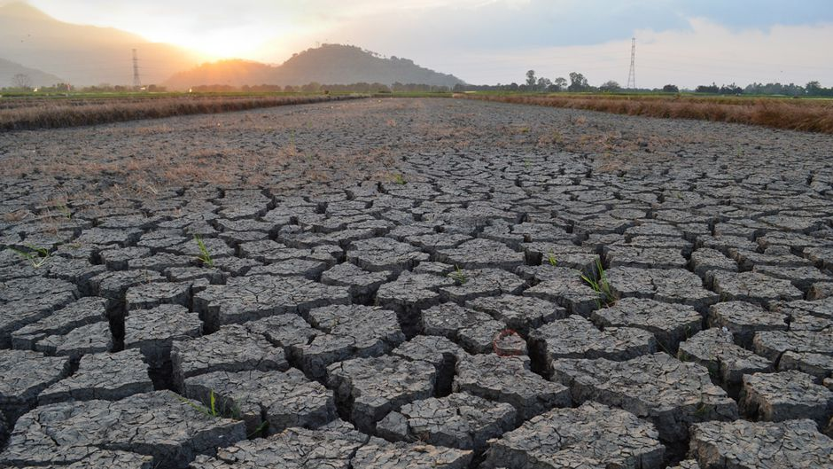

Penggurunan adalah jenis degradasi lahan di mana wilayah tanah yang relatif kering menjadi semakin tandus, biasanya kehilangan sumber air serta vegetasi dan satwa liar. Hal ini disebabkan oleh berbagai faktor, seperti perubahan iklim dan aktivitas manusia. Penggurunan merupakan masalah ekologis dan lingkungan global yang signifikan yang memengaruhi lebih dari 100 negara. Ini menjadi perhatian utama bagi komunitas internasional, karena dampaknya yang besar terhadap lingkungan, ekonomi, dan kesehatan manusia. Penggurunan adalah proses kompleks yang dipengaruhi oleh berbagai faktor, termasuk perubahan iklim, deforestasi, penggembalaan berlebihan, dan praktik pertanian yang buruk. Ini merupakan ancaman besar terhadap lingkungan dan kesehatan manusia, karena dapat menyebabkan hilangnya lahan subur, kehancuran ekosistem, dan pengungsian penduduk.
Dampak dari penggurunan memiliki pengaruh signifikan terhadap keanekaragaman hayati, mata pencaharian, dan ketahanan ekosistem. Ini dapat menyebabkan hilangnya spesies tumbuhan dan hewan, penghancuran ekosistem, dan pengungsian manusia. Penggurunan juga dapat menyebabkan hilangnya lahan subur, yang dapat berdampak signifikan pada pertanian dan ketahanan pangan. Ini juga dapat menyebabkan hilangnya sumber daya air, yang dapat berdampak besar pada kesehatan dan kesejahteraan manusia. Penggurunan juga dapat menyebabkan hilangnya ketahanan ekosistem, yang dapat berdampak besar pada lingkungan dan kesehatan manusia. Ini adalah ancaman besar bagi lingkungan dan kesehatan manusia, karena dapat menyebabkan hilangnya lahan subur, penghancuran ekosistem, dan pengungsian manusia.
Penggurunan dan degradasi lahan merupakan hasil dari proses alami seperti variabilitas iklim dan aktivitas manusia, termasuk deforestasi, overgrazing, pertanian yang tidak berkelanjutan, pengelolaan air yang buruk, urbanisasi, dan tekanan populasi. Proses-proses ini menyebabkan erosi tanah, hilangnya penutupan vegetasi, dan penurunan kesuburan tanah, yang memperburuk degradasi lingkungan dan mengancam ketahanan ekosistem. Mengatasi penggurunan dan degradasi lahan memerlukan strategi komprehensif yang mengintegrasikan pengelolaan sumber daya alam, praktik penggunaan lahan yang berkelanjutan, dan langkah-langkah adaptasi perubahan iklim untuk memulihkan ekosistem yang terdegradasi dan mempromosikan ketahanan.
Untuk menghentikan penggurunan dan degradasi lahan, dibutuhkan pendekatan multifaset, termasuk mempromosikan praktik penggunaan lahan yang berkelanjutan, menerapkan manajemen cekungan air terpadu, mengurangi overgrazing, memulihkan tutupan vegetasi, mengelola sumber daya air secara berkelanjutan, mengendalikan erosi tanah, memerangi perubahan iklim, mempromosikan perencanaan kota yang berkelanjutan, memberdayakan komunitas lokal, memperkuat kebijakan dan tata kelola, serta meningkatkan kerja sama internasional. Upaya-upaya ini bertujuan untuk menghentikan dan membalikkan degradasi lahan, memulihkan ekosistem, dan memastikan keberlanjutan jangka panjang sumber daya lahan.